Summary
This experiment investigates coral reef fragment restoration. Box-Behnken design to maximize coral growth rate and survival by tuning fragment size, depth placement, and spacing.
The design varies 3 factors: fragment cm (cm), ranging from 3 to 10, depth m (m), ranging from 3 to 15, and spacing cm (cm), ranging from 10 to 40. The goal is to optimize 2 responses: growth cm yr (cm/yr) (maximize) and survival pct (%) (maximize). Fixed conditions held constant across all runs include species = acropora, substrate = ceramic_disc.
A Box-Behnken design was chosen because it efficiently fits quadratic models with 3 continuous factors while avoiding extreme corner combinations — requiring only 15 runs instead of the 8 needed for a full factorial at two levels.
Quadratic response surface models were fitted to capture potential curvature and factor interactions. The RSM contour plots below visualize how pairs of factors jointly affect each response.
Key Findings
For growth cm yr, the most influential factors were fragment cm (50.7%), depth m (30.3%), spacing cm (19.0%). The best observed value was 4.6 (at fragment cm = 6.5, depth m = 15, spacing cm = 10).
For survival pct, the most influential factors were fragment cm (63.7%), depth m (25.4%), spacing cm (11.0%). The best observed value was 83.0 (at fragment cm = 6.5, depth m = 15, spacing cm = 10).
Recommended Next Steps
- Run confirmation experiments at the predicted optimal settings to validate the model.
- Consider whether any fixed factors should be varied in a future study.
Experimental Setup
Factors
| Factor | Low | High | Unit |
|---|
fragment_cm | 3 | 10 | cm |
depth_m | 3 | 15 | m |
spacing_cm | 10 | 40 | cm |
Fixed: species = acropora, substrate = ceramic_disc
Responses
| Response | Direction | Unit |
|---|
growth_cm_yr | ↑ maximize | cm/yr |
survival_pct | ↑ maximize | % |
Configuration
{
"metadata": {
"name": "Coral Reef Fragment Restoration",
"description": "Box-Behnken design to maximize coral growth rate and survival by tuning fragment size, depth placement, and spacing"
},
"factors": [
{
"name": "fragment_cm",
"levels": [
"3",
"10"
],
"type": "continuous",
"unit": "cm"
},
{
"name": "depth_m",
"levels": [
"3",
"15"
],
"type": "continuous",
"unit": "m"
},
{
"name": "spacing_cm",
"levels": [
"10",
"40"
],
"type": "continuous",
"unit": "cm"
}
],
"fixed_factors": {
"species": "acropora",
"substrate": "ceramic_disc"
},
"responses": [
{
"name": "growth_cm_yr",
"optimize": "maximize",
"unit": "cm/yr"
},
{
"name": "survival_pct",
"optimize": "maximize",
"unit": "%"
}
],
"settings": {
"operation": "box_behnken",
"test_script": "use_cases/251_coral_reef_restoration/sim.sh"
}
}
Experimental Matrix
The Box-Behnken Design produces 15 runs. Each row is one experiment with specific factor settings.
| Run | fragment_cm | depth_m | spacing_cm |
|---|
| 1 | 6.5 | 3 | 10 |
| 2 | 6.5 | 9 | 25 |
| 3 | 10 | 9 | 40 |
| 4 | 10 | 9 | 10 |
| 5 | 6.5 | 9 | 25 |
| 6 | 6.5 | 9 | 25 |
| 7 | 3 | 9 | 40 |
| 8 | 10 | 3 | 25 |
| 9 | 6.5 | 3 | 40 |
| 10 | 10 | 15 | 25 |
| 11 | 3 | 9 | 10 |
| 12 | 6.5 | 15 | 40 |
| 13 | 3 | 3 | 25 |
| 14 | 3 | 15 | 25 |
| 15 | 6.5 | 15 | 10 |
Step-by-Step Workflow
1
Preview the design
$ doe info --config use_cases/251_coral_reef_restoration/config.json
2
Generate the runner script
$ doe generate --config use_cases/251_coral_reef_restoration/config.json \
--output use_cases/251_coral_reef_restoration/results/run.sh --seed 42
3
Execute the experiments
$ bash use_cases/251_coral_reef_restoration/results/run.sh
4
Analyze results
$ doe analyze --config use_cases/251_coral_reef_restoration/config.json
5
Get optimization recommendations
$ doe optimize --config use_cases/251_coral_reef_restoration/config.json
6
Multi-objective optimization
With 2 competing responses, use --multi to find the best compromise via Derringer–Suich desirability.
$ doe optimize --config use_cases/251_coral_reef_restoration/config.json --multi
7
Generate the HTML report
$ doe report --config use_cases/251_coral_reef_restoration/config.json \
--output use_cases/251_coral_reef_restoration/results/report.html
Features Exercised
| Feature | Value |
|---|
| Design type | box_behnken |
| Factor types | continuous (all 3) |
| Arg style | double-dash |
| Responses | 2 (growth_cm_yr ↑, survival_pct ↑) |
| Total runs | 15 |
Analysis Results
Generated from actual experiment runs using the DOE Helper Tool.
Response: growth_cm_yr
Top factors: fragment_cm (50.7%), depth_m (30.3%), spacing_cm (19.0%).
ANOVA
| Source | DF | SS | MS | F | p-value |
|---|
| Source | DF | SS | MS | F | p-value |
| fragment_cm | 2 | 3.1288 | 1.5644 | 3.785 | 0.0697 |
| depth_m | 2 | 0.9330 | 0.4665 | 1.129 | 0.3700 |
| spacing_cm | 2 | 0.4802 | 0.2401 | 0.581 | 0.5814 |
| Lack | of | Fit | 6 | 3.3687 | 0.5614 |
| Pure | Error | 2 | 0.8267 | | |
| Error | 8 | 4.1953 | 0.4133 | | |
| Total | 14 | 8.7373 | 0.6241 | | |
Pareto Chart
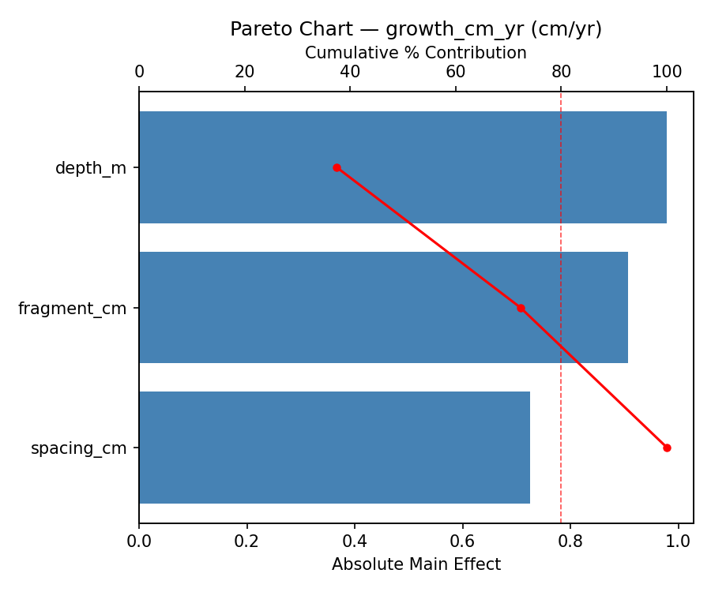
Main Effects Plot

Normal Probability Plot of Effects
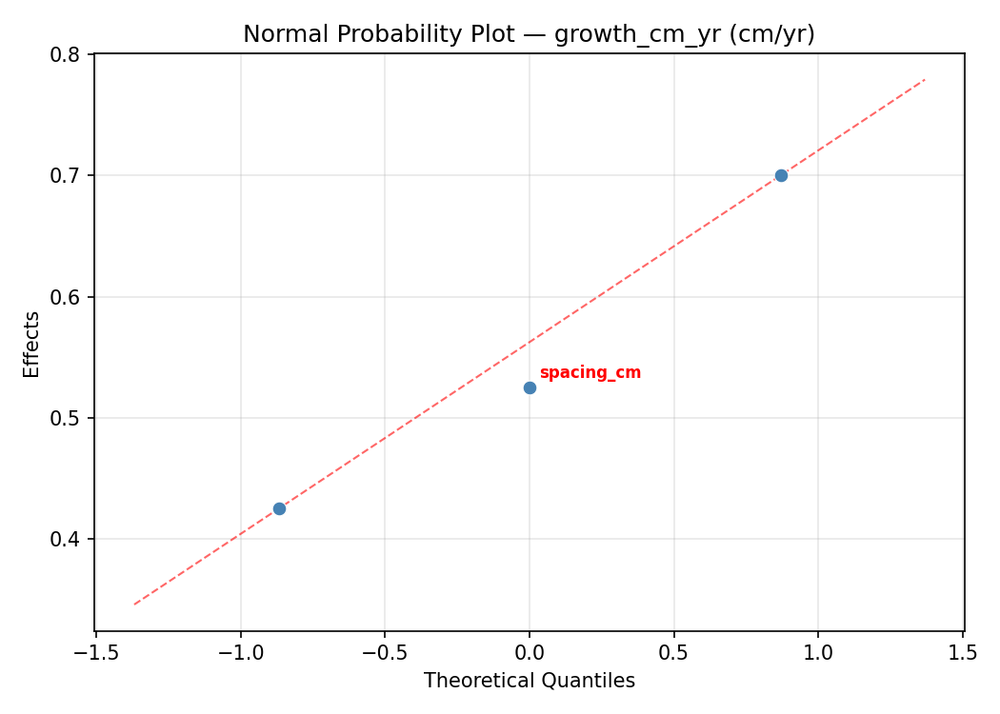
Half-Normal Plot of Effects
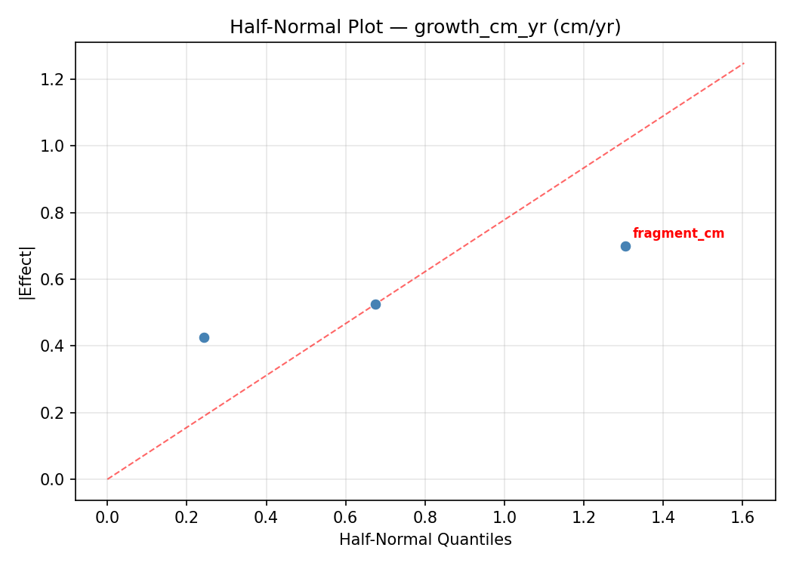
Model Diagnostics
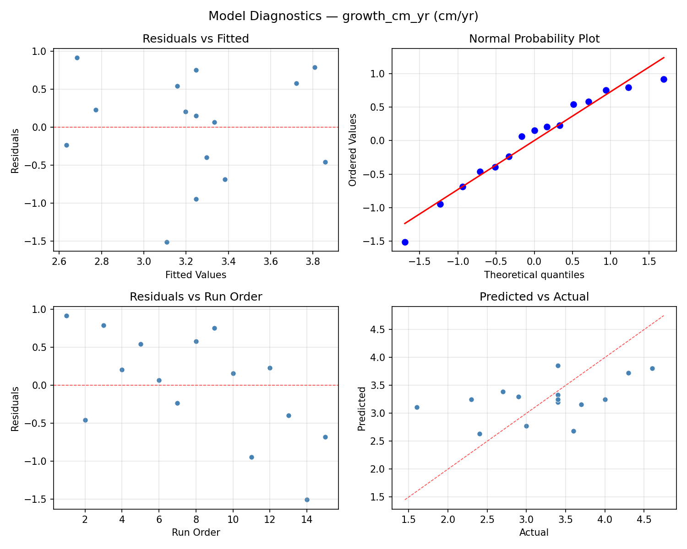
Response: survival_pct
Top factors: fragment_cm (63.7%), depth_m (25.4%), spacing_cm (11.0%).
ANOVA
| Source | DF | SS | MS | F | p-value |
|---|
| Source | DF | SS | MS | F | p-value |
| fragment_cm | 2 | 166.2190 | 83.1095 | 5.088 | 0.0375 |
| depth_m | 2 | 27.7548 | 13.8774 | 0.850 | 0.4628 |
| spacing_cm | 2 | 5.3262 | 2.6631 | 0.163 | 0.8523 |
| Lack | of | Fit | 6 | 200.9667 | 33.4944 |
| Pure | Error | 2 | 32.6667 | | |
| Error | 8 | 233.6333 | 16.3333 | | |
| Total | 14 | 432.9333 | 30.9238 | | |
Pareto Chart
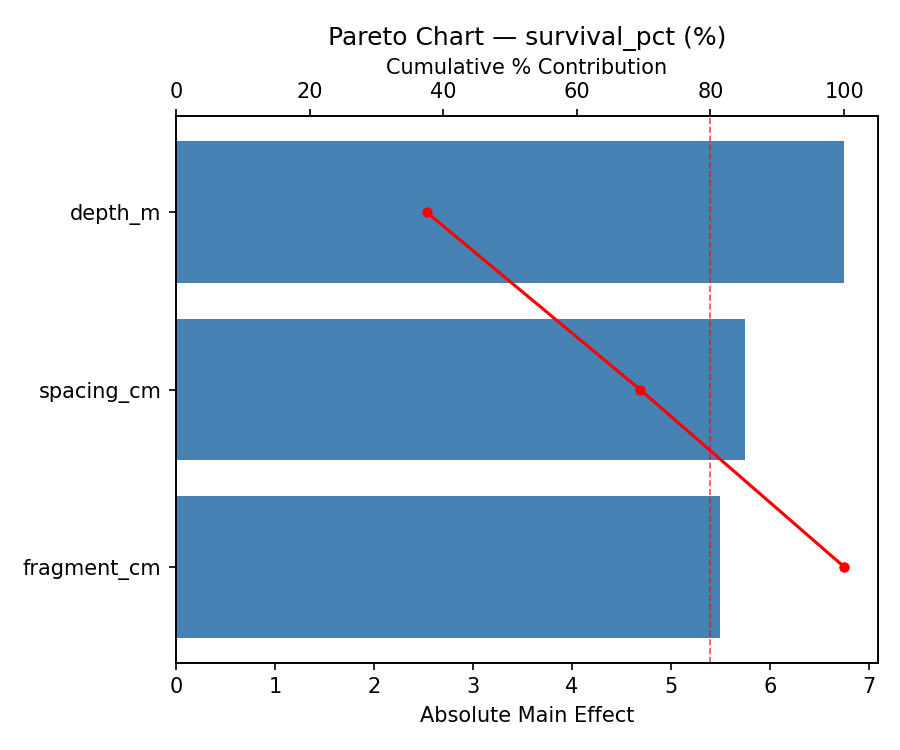
Main Effects Plot
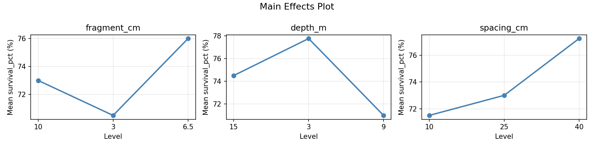
Normal Probability Plot of Effects
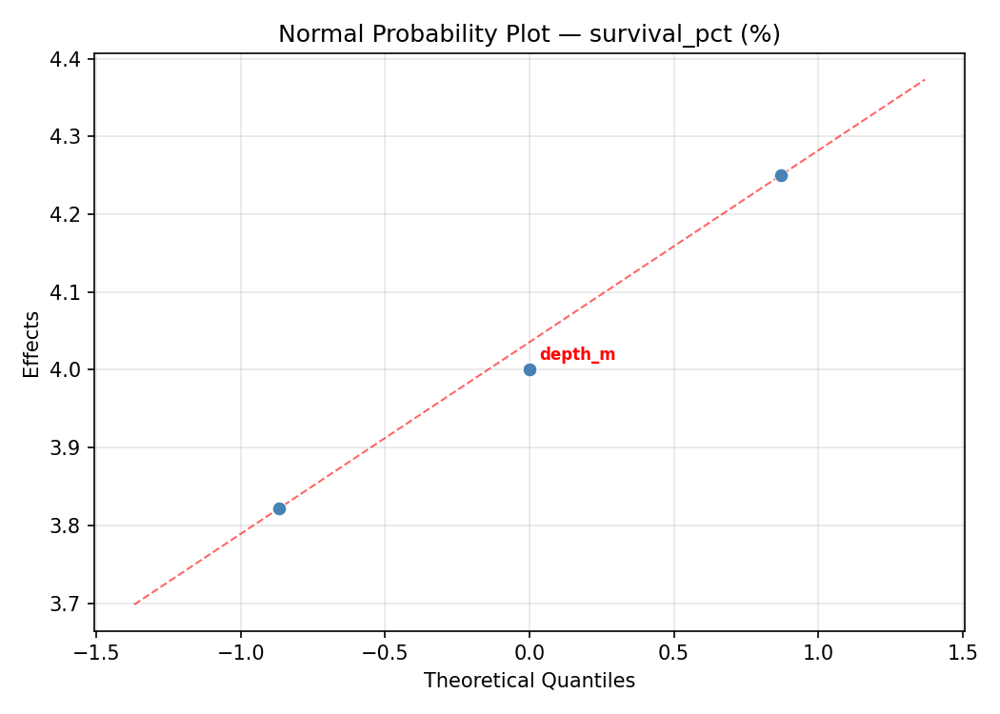
Half-Normal Plot of Effects
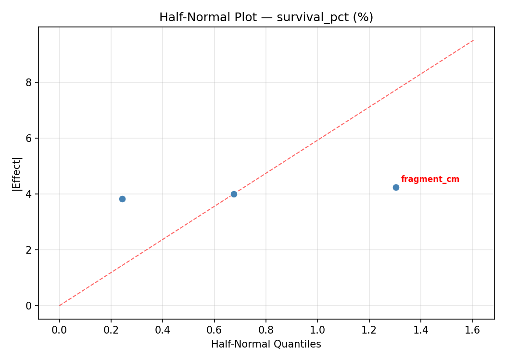
Model Diagnostics
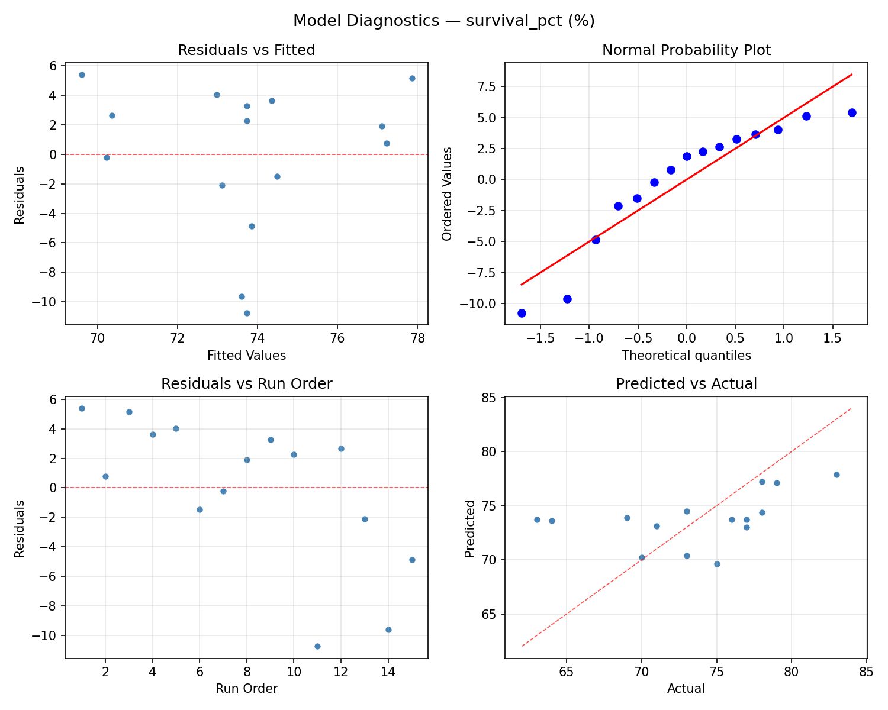
Response Surface Plots
3D surfaces fitted with quadratic RSM. Red dots are observed data points.
growth cm yr depth m vs spacing cm
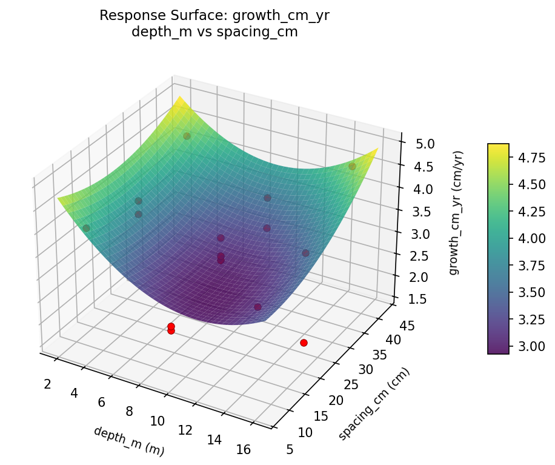
growth cm yr fragment cm vs depth m

growth cm yr fragment cm vs spacing cm
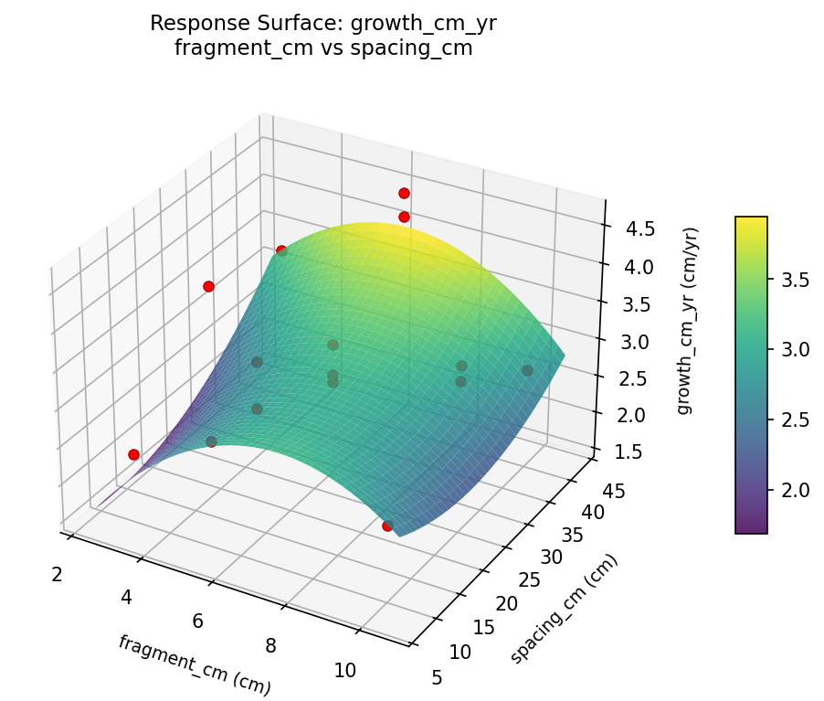
survival pct depth m vs spacing cm
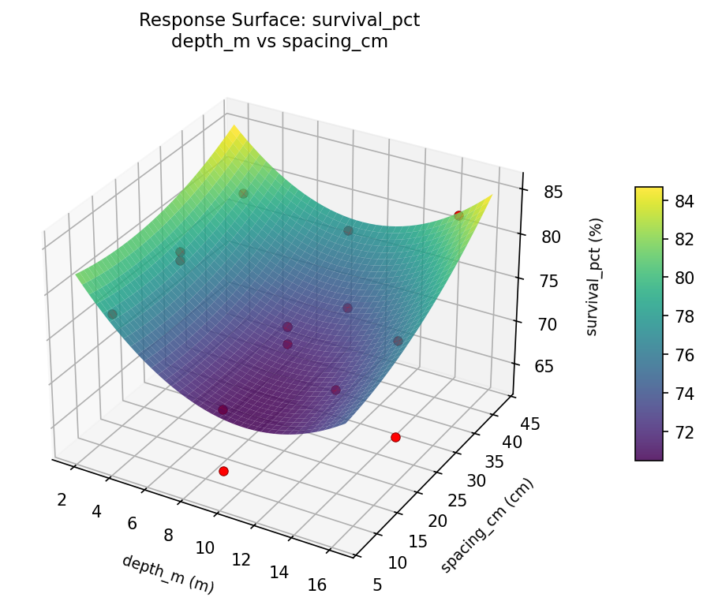
survival pct fragment cm vs depth m

survival pct fragment cm vs spacing cm

Multi-Objective Optimization
When responses compete, Derringer–Suich desirability finds the best compromise.
Each response is scaled to a 0–1 desirability, then combined via a weighted geometric mean.
Overall Desirability
D = 0.9545
Per-Response Desirability
| Response | Weight | Desirability | Predicted | Dir |
|---|
growth_cm_yr |
1.5 |
|
4.60 0.9545 4.60 cm/yr |
↑ |
survival_pct |
2.0 |
|
83.00 0.9545 83.00 % |
↑ |
Recommended Settings
| Factor | Value |
|---|
fragment_cm | 6.5 cm |
depth_m | 15 m |
spacing_cm | 10 cm |
Source: from observed run #3
Trade-off Summary
Sacrifice = how much worse than single-objective best.
| Response | Predicted | Best Observed | Sacrifice |
|---|
survival_pct | 83.00 | 83.00 | +0.00 |
Top 3 Runs by Desirability
| Run | D | Factor Settings |
|---|
| #8 | 0.8105 | fragment_cm=3, depth_m=3, spacing_cm=25 |
| #9 | 0.7194 | fragment_cm=3, depth_m=15, spacing_cm=25 |
Model Quality
| Response | R² | Type |
|---|
survival_pct | 0.8077 | quadratic |
Full Multi-Objective Output
============================================================
MULTI-OBJECTIVE OPTIMIZATION
Method: Derringer-Suich Desirability Function
============================================================
Overall desirability: D = 0.9545
Response Weight Desirability Predicted Direction
---------------------------------------------------------------------
growth_cm_yr 1.5 0.9545 4.60 cm/yr ↑
survival_pct 2.0 0.9545 83.00 % ↑
Recommended settings:
fragment_cm = 6.5 cm
depth_m = 15 m
spacing_cm = 10 cm
(from observed run #3)
Trade-off summary:
growth_cm_yr: 4.60 (best observed: 4.60, sacrifice: +0.00)
survival_pct: 83.00 (best observed: 83.00, sacrifice: +0.00)
Model quality:
growth_cm_yr: R² = 0.4226 (linear)
survival_pct: R² = 0.8077 (quadratic)
Top 3 observed runs by overall desirability:
1. Run #3 (D=0.9545): fragment_cm=6.5, depth_m=15, spacing_cm=10
2. Run #8 (D=0.8105): fragment_cm=3, depth_m=3, spacing_cm=25
3. Run #9 (D=0.7194): fragment_cm=3, depth_m=15, spacing_cm=25
Full Analysis Output
=== Main Effects: growth_cm_yr ===
Factor Effect Std Error % Contribution
--------------------------------------------------------------
fragment_cm 1.0857 0.2040 50.7%
depth_m 0.6500 0.2040 30.3%
spacing_cm 0.4071 0.2040 19.0%
=== ANOVA Table: growth_cm_yr ===
Source DF SS MS F p-value
-----------------------------------------------------------------------------
fragment_cm 2 3.1288 1.5644 3.785 0.0697
depth_m 2 0.9330 0.4665 1.129 0.3700
spacing_cm 2 0.4802 0.2401 0.581 0.5814
Lack of Fit 6 3.3687 0.5614 1.358 0.4823
Pure Error 2 0.8267 0.4133
Error 8 4.1953 0.4133
Total 14 8.7373 0.6241
=== Summary Statistics: growth_cm_yr ===
fragment_cm:
Level N Mean Std Min Max
------------------------------------------------------------
10 4 3.4000 0.6377 2.9000 4.3000
3 4 2.5000 0.8756 1.6000 3.7000
6.5 7 3.5857 0.5900 2.7000 4.6000
depth_m:
Level N Mean Std Min Max
------------------------------------------------------------
15 4 3.5000 0.8832 2.3000 4.3000
3 4 2.8500 0.4203 2.4000 3.4000
9 7 3.3286 0.9069 1.6000 4.6000
spacing_cm:
Level N Mean Std Min Max
------------------------------------------------------------
10 4 3.3500 0.6028 2.7000 4.0000
25 7 3.3571 0.8886 2.3000 4.6000
40 4 2.9500 0.9000 1.6000 3.4000
=== Main Effects: survival_pct ===
Factor Effect Std Error % Contribution
--------------------------------------------------------------
fragment_cm 8.0714 1.4358 63.7%
depth_m 3.2143 1.4358 25.4%
spacing_cm 1.3929 1.4358 11.0%
=== ANOVA Table: survival_pct ===
Source DF SS MS F p-value
-----------------------------------------------------------------------------
fragment_cm 2 166.2190 83.1095 5.088 0.0375
depth_m 2 27.7548 13.8774 0.850 0.4628
spacing_cm 2 5.3262 2.6631 0.163 0.8523
Lack of Fit 6 200.9667 33.4944 2.051 0.3635
Pure Error 2 32.6667 16.3333
Error 8 233.6333 16.3333
Total 14 432.9333 30.9238
=== Summary Statistics: survival_pct ===
fragment_cm:
Level N Mean Std Min Max
------------------------------------------------------------
10 4 74.0000 3.4641 71.0000 79.0000
3 4 68.5000 6.4550 63.0000 77.0000
6.5 7 76.5714 4.1975 69.0000 83.0000
depth_m:
Level N Mean Std Min Max
------------------------------------------------------------
15 4 74.2500 7.5443 63.0000 79.0000
3 4 71.5000 3.1091 69.0000 76.0000
9 7 74.7143 5.8513 64.0000 83.0000
spacing_cm:
Level N Mean Std Min Max
------------------------------------------------------------
10 4 74.0000 3.8297 69.0000 77.0000
25 7 74.1429 6.6940 63.0000 83.0000
40 4 72.7500 6.1847 64.0000 78.0000
Optimization Recommendations
=== Optimization: growth_cm_yr ===
Direction: maximize
Best observed run: #3
fragment_cm = 6.5
depth_m = 15
spacing_cm = 10
Value: 4.6
RSM Model (linear, R² = 0.3024, Adj R² = 0.1122):
Coefficients:
intercept +3.2467
fragment_cm +0.0375
depth_m +0.1625
spacing_cm -0.5500
RSM Model (quadratic, R² = 0.8776, Adj R² = 0.6574):
Coefficients:
intercept +3.4667
fragment_cm +0.0375
depth_m +0.1625
spacing_cm -0.5500
fragment_cm*depth_m +0.5250
fragment_cm*spacing_cm -0.2000
depth_m*spacing_cm -0.5000
fragment_cm^2 -0.7458
depth_m^2 -0.0458
spacing_cm^2 +0.3792
Curvature analysis:
fragment_cm coef=-0.7458 concave (has a maximum)
spacing_cm coef=+0.3792 convex (has a minimum)
depth_m coef=-0.0458 negligible curvature
Notable interactions:
fragment_cm*depth_m coef=+0.5250 (synergistic)
depth_m*spacing_cm coef=-0.5000 (antagonistic)
Predicted optimum (from quadratic model, at observed points):
fragment_cm = 6.5
depth_m = 15
spacing_cm = 10
Predicted value: 5.0125
Surface optimum (via L-BFGS-B, quadratic model):
fragment_cm = 8.28911
depth_m = 15
spacing_cm = 10
Predicted value: 5.2074
Model quality: Good fit — general trends are captured, some noise remains.
Factor importance:
1. spacing_cm (effect: 1.1, contribution: 49.3%)
2. fragment_cm (effect: 0.8, contribution: 36.2%)
3. depth_m (effect: 0.3, contribution: 14.6%)
=== Optimization: survival_pct ===
Direction: maximize
Best observed run: #3
fragment_cm = 6.5
depth_m = 15
spacing_cm = 10
Value: 83.0
RSM Model (linear, R² = 0.3551, Adj R² = 0.1793):
Coefficients:
intercept +73.7333
fragment_cm +1.6250
depth_m +1.2500
spacing_cm -3.8750
RSM Model (quadratic, R² = 0.8974, Adj R² = 0.7127):
Coefficients:
intercept +76.3333
fragment_cm +1.6250
depth_m +1.2500
spacing_cm -3.8750
fragment_cm*depth_m +4.5000
fragment_cm*spacing_cm +0.2500
depth_m*spacing_cm -3.0000
fragment_cm^2 -5.5417
depth_m^2 +0.2083
spacing_cm^2 +0.4583
Curvature analysis:
fragment_cm coef=-5.5417 concave (has a maximum)
spacing_cm coef=+0.4583 convex (has a minimum)
depth_m coef=+0.2083 convex (has a minimum)
Notable interactions:
fragment_cm*depth_m coef=+4.5000 (synergistic)
depth_m*spacing_cm coef=-3.0000 (antagonistic)
Predicted optimum (from quadratic model, at observed points):
fragment_cm = 6.5
depth_m = 15
spacing_cm = 10
Predicted value: 85.1250
Surface optimum (via L-BFGS-B, quadratic model):
fragment_cm = 8.35526
depth_m = 15
spacing_cm = 10
Predicted value: 86.6821
Model quality: Good fit — general trends are captured, some noise remains.
Factor importance:
1. spacing_cm (effect: 7.8, contribution: 44.4%)
2. fragment_cm (effect: 7.2, contribution: 41.3%)
3. depth_m (effect: 2.5, contribution: 14.3%)